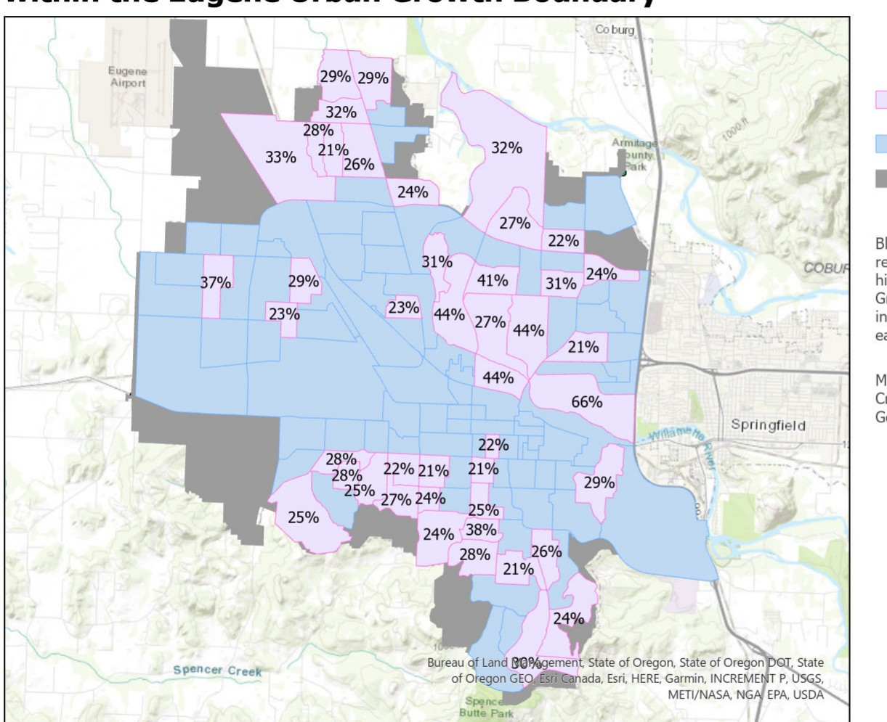
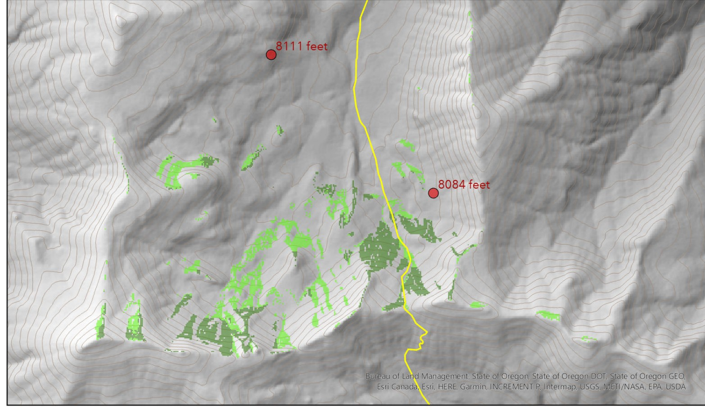
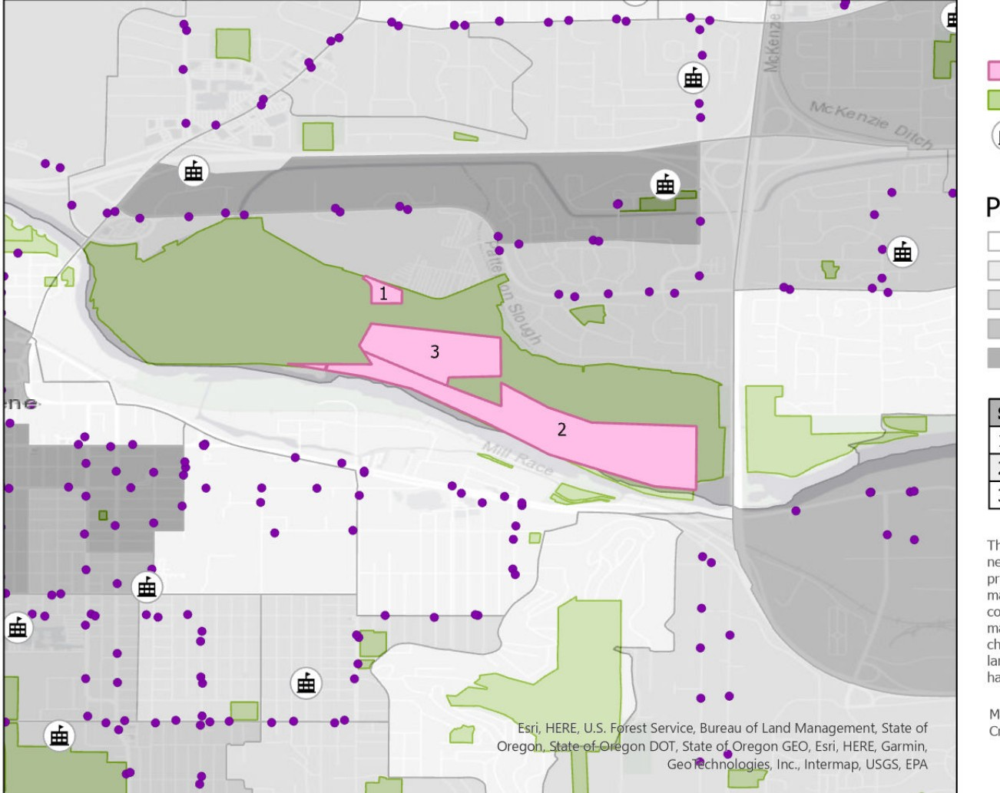

GIS · SPATIAL DATA · PLANNING
hi, i'm cindy!
I'm a Spatial Data Science student interested in using GIS to understand places, communities, and environmental questions — and turn them into useful maps and ideas.
Breasts and Eggs
Mieko Kawakami
about me
using spatial data to better understand the world around us.
Hi! I'm Cindy, a Spatial Data Science student at the University of Oregon. I like using maps and spatial data to turn real-world questions into something we can actually see and explore.
My interests sit somewhere between GIS, planning, communities, and environmental topics. I'm building experience with ArcGIS Pro, ArcGIS Online, spatial analysis, data visualization, and cartography.
projects

Elderly Population & Community Access
Identified Eugene neighborhoods with higher concentrations of adults 65+ and compared them with nearby transit, parks, and community resources.

Wolverine Habitat Suitability
Used raster-based suitability and visibility analysis to explore potential high-quality wolverine denning habitat.

Navigation Center Site Selection
Narrowed public parcels using site constraints, access, and surrounding planning factors.
resume
a few tools i work with
contact me
let's connect
Please free to reach out about GIS, projects, internships, or anything related!